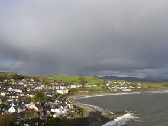
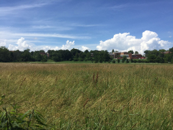
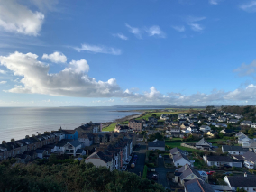
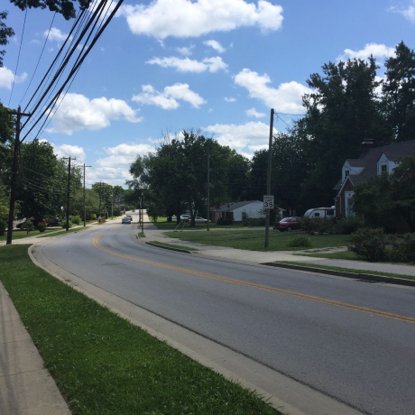
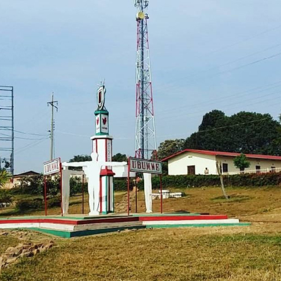
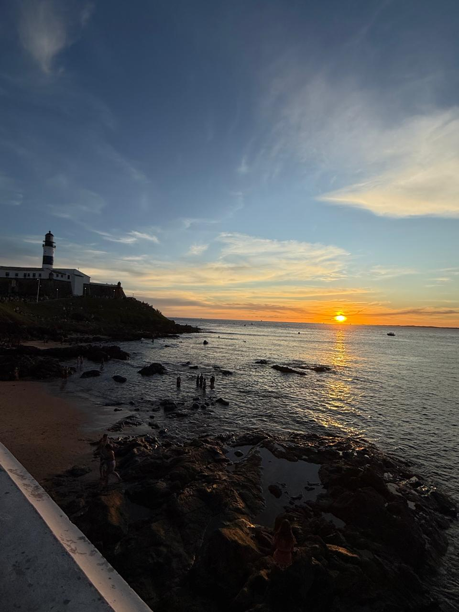

De Pátria para Pátria
Uma jornada épica do Kentucky ao Burundi pelo País de Gales e Ucrânia

sua pátria
Conheça um pouco mais sobre a localização dos seus amigos
Cada pessoa é um artista livre, chamado a transformar as condições, pensamentos e estruturas que moldam a nossa sociedade.
— Joseph Beuys
A cidade de TripleTen reuniu profissionais de diversos cantos do mundo. Hoje, a Galeria de Arte TripleTen tem o orgulho de apresentar suas histórias e fotos dos lugares que eles chamam de lar.






Criccieth, País de Gales
ARTISTA
Steffan Warren, editor-chefe
Kseniya Bakhareva, gerente de projeto

A ruína medieval do castelo de Criccieth tem vista para a cidade abaixo de uma rocha que se projeta para o mar. Acredita-se que tenha sido construído por Llywelyn, o Grande, no início do século XIII.
A uma curta caminhada da estrada do castelo, você pode desfrutar do melhor sorvete do mundo no Cadwalader's...
Compre esta obra de arte como NFT
Berea, EUA
ARTISTA
Travis Turner, autor e editor

Berea é uma pequena cidade localizada na parte central do Kentucky. A cidade é cercada por belas florestas e campos. É conhecida como a capital do artesanato do estado.
Compre esta obra de arte como NFT
Parque Nacional de Kibira
ARTISTA
Eric Kalisa, fotógrafo

O Parque Nacional de Kibira, uma das maiores reservas de vida selvagem para macacos, se sobrepõe a quatro províncias e cobre 400 quilômetros quadrados.
Compre esta obra de arte como NFT
Salvador, Brasil
ARTISTA
Gabriela Cavalcante, desenvolvedora Web

Salvador, a capital da Bahia, é conhecida por sua rica cultura afro-brasileira, arquitetura colonial colorida e litoral deslumbrante.
Compre esta obra de arte como NFT